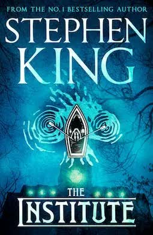

The Institute by Steven King

June 11, 11:43 p.m. The end.
I read this book in 6 days, and those were some of the best 6 days I have had in recent months.
The plot of the book revolves around children with telekinetic and telepathic abilities who are kidnapped by a secret organization called “the Institute” in order to strengthen their abilities and use them to maintain peace and order throughout the world. But then a twelve-year-old boy named Luke ends up there. He turns out to be a genius, and through a series of circumstances, he gets a chance to escape.
In the Institute, the children are subjected to all kinds of experiments: they are given injections, dunked into a barrel of water, and allowed to smoke and drink to relieve stress. And yet, the children find the strength to resist. Children who are 10 to 14 years old. Children who are somewhere unknown, surrounded by people they do not understand. Children whose minds scientists in a top-secret organization are trying to destroy.
United, they realize that they have the power to fight back against the Institute.
What did it remind me of?
Aang and his team. Very different children, united by a common goal, who managed to endure.
Starting from around the middle, the narrative moves at a fast pace. Several events happen at the same time, and the storylines alternate from chapter to chapter. That is when it becomes almost impossible to stop. King captures your attention completely, and all that is left for you to do is read and enjoy.
Mr. King, it was beautiful!